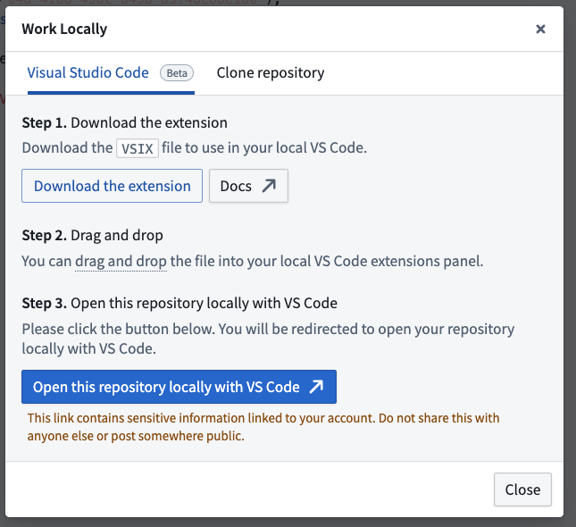
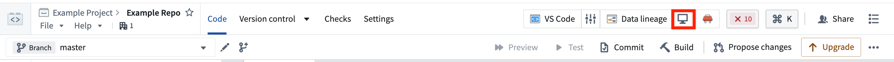
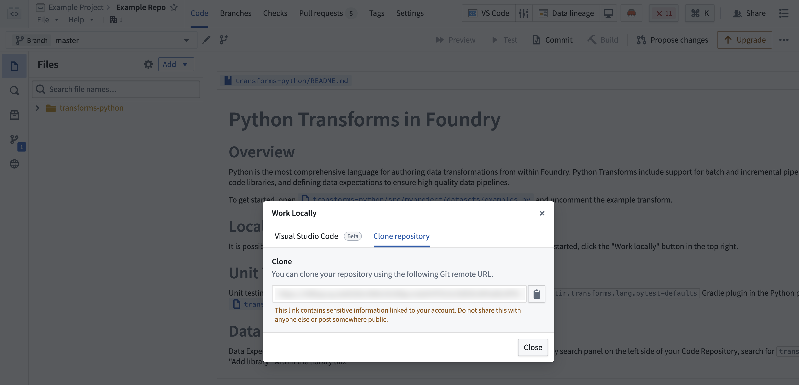

It is possible to carry out local development of Python transforms repositories, allowing for high-speed iterative development.
There are two options for developing locally in your Python transforms repository:
:::callout{theme="neutral"} To enable the extension and local preview capabilities, contact your platform administrator to modify Code Repositories settings in Control Panel. The Palantir extension for Visual Studio Code is enabled by default when using VS Code workspaces. :::

If you experience unexpected language server errors such as broken imports, the Python interpreter's automatic set up may have failed. To fix this, you can manually set up the interpreter by navigating to the Command Palette â, then typing Python: Select interpreter and choosing a Python interpreter matching the path ./maestro/bin/python. The .maestro folder should be present if the Palantir extension successfully ran the Palantir: Install Python environment command.
Run unit tests for your Python transforms with the local test executable:
.maestro/bin/pytest
The pytest-transforms plugin discovers and runs tests that follow standard test conventions. For guidance on writing tests, see Unit tests.
CI, JEMMA, and CA are not set./usr/sbin/softwareupdate --install-rosetta --agree-to-license in the terminal.

git clone <URL> on your local machine in a directory of your choice. Then, use the cd command to navigate to the repository.Dataset previews are supported in local development. Refer to local preview for more details.